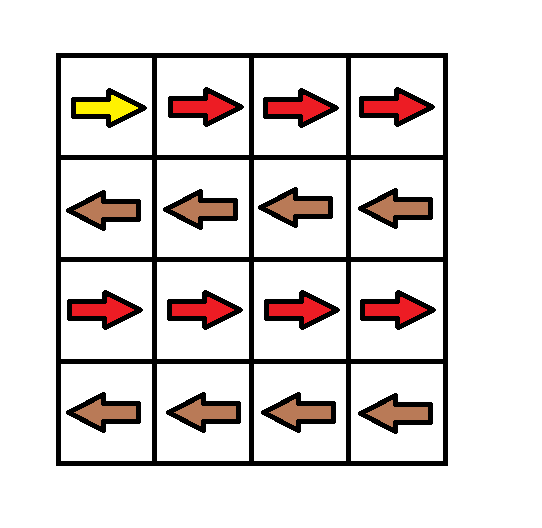
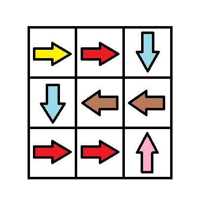
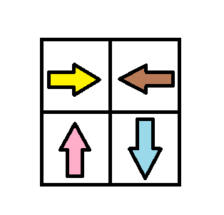

| Category | Difficulty | Likes | Dislikes |
|---|---|---|---|
| Algorithms | Hard | 2564 | 35 |
array | breadth-first-search | graph | heap-priority-queue | matrix | shortest-path
google | uber | docusign
Given an m x n grid. Each cell of the grid has a sign pointing to the next cell you should visit if you are currently in this cell. The sign of grid[i][j] can be:
1 which means go to the cell to the right. (i.e go from grid[i][j] to grid[i][j + 1])2 which means go to the cell to the left. (i.e go from grid[i][j] to grid[i][j - 1])3 which means go to the lower cell. (i.e go from grid[i][j] to grid[i + 1][j])4 which means go to the upper cell. (i.e go from grid[i][j] to grid[i - 1][j])Notice that there could be some signs on the cells of the grid that point outside the grid.
You will initially start at the upper left cell (0, 0). A valid path in the grid is a path that starts from the upper left cell (0, 0) and ends at the bottom-right cell (m - 1, n - 1) following the signs on the grid. The valid path does not have to be the shortest.
You can modify the sign on a cell with cost = 1. You can modify the sign on a cell one time only.
Return the minimum cost to make the grid have at least one valid path.
Example 1:

Input: grid = [[1,1,1,1],[2,2,2,2],[1,1,1,1],[2,2,2,2]]
Output: 3
Explanation: You will start at point (0, 0).
The path to (3, 3) is as follows. (0, 0) --> (0, 1) --> (0, 2) --> (0, 3) change the arrow to down with cost = 1 --> (1, 3) --> (1, 2) --> (1, 1) --> (1, 0) change the arrow to down with cost = 1 --> (2, 0) --> (2, 1) --> (2, 2) --> (2, 3) change the arrow to down with cost = 1 --> (3, 3)
The total cost = 3.Example 2:

Input: grid = [[1,1,3],[3,2,2],[1,1,4]]
Output: 0
Explanation: You can follow the path from (0, 0) to (2, 2).Example 3:

Input: grid = [[1,2],[4,3]]
Output: 1
Constraints:
m == grid.lengthn == grid[i].length1 <= m, n <= 1001 <= grid[i][j] <= 4